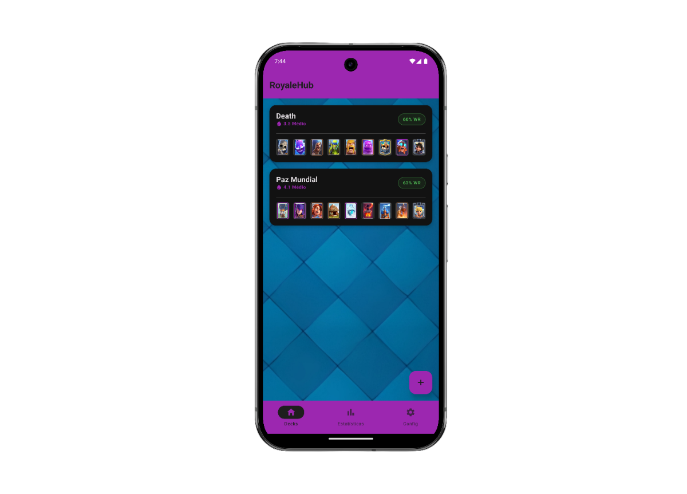
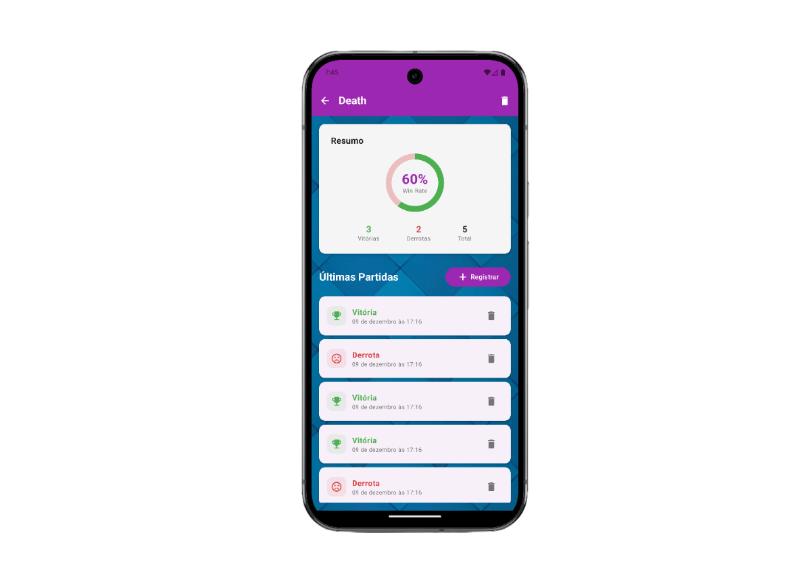
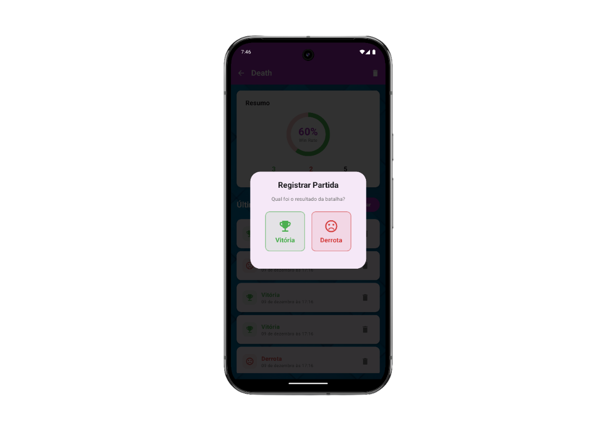
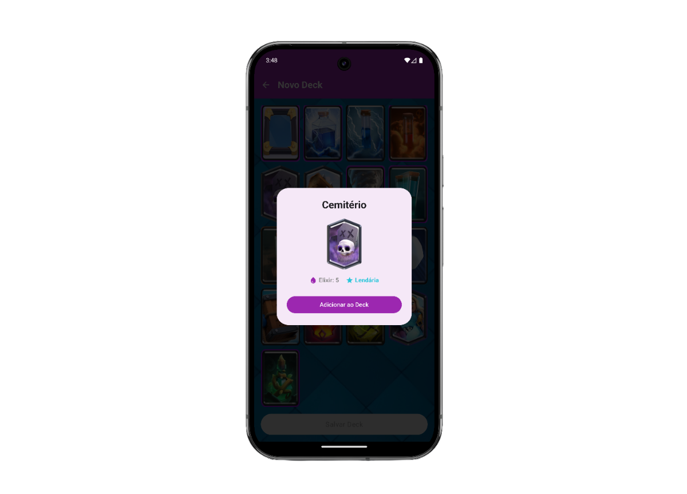
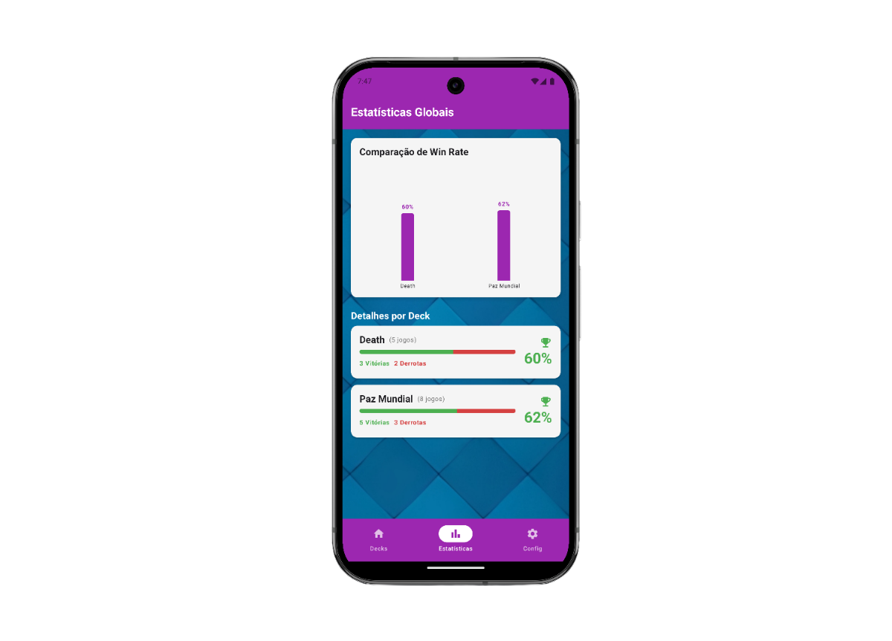
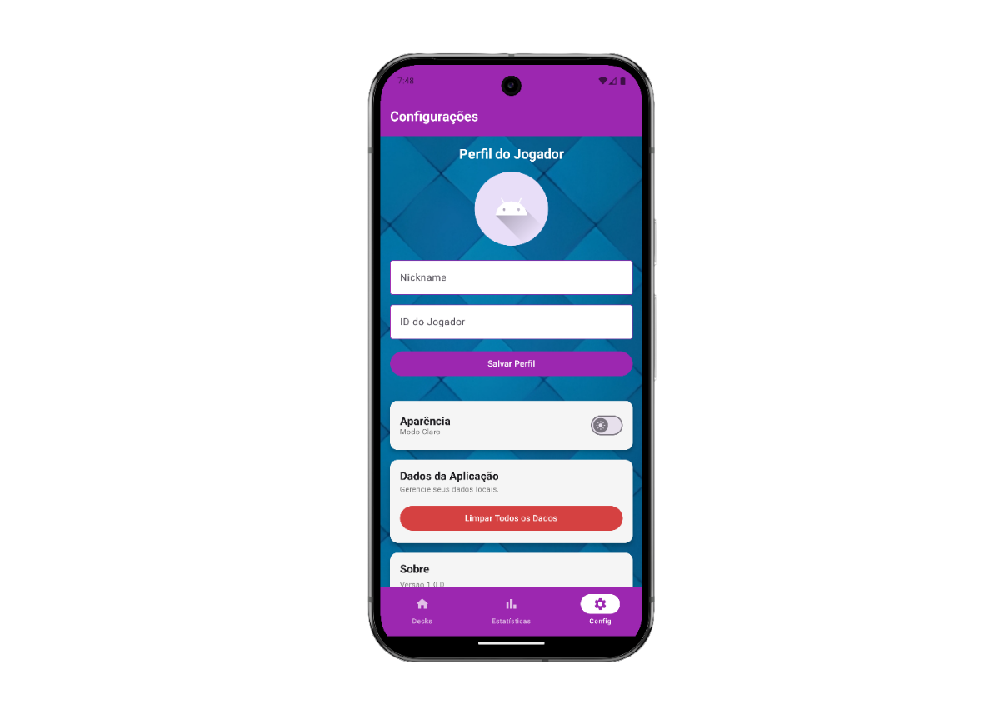

RoyaleHub
RoyaleHub
O RoyaleHub é uma aplicação voltada para jogadores de Clash Royale que desejam organizar e analisar seu desempenho no jogo de forma prática. O projeto permite ao usuário criar e editar decks personalizados, armazenando a composição de cartas de cada um. A ideia é centralizar as informações de desempenho dos decks em um único lugar, facilitando a comparação entre estratégias e auxiliando o jogador a entender quais combinações funcionam melhor em suas partidas.
Equipe do Projeto
 Sávio de Carvalho
Soares
Sávio de Carvalho
Soares-
Douglas Eduardo dos
Santos Sousa
Funcionalidades Principais
Gestão de Decks
Criação, visualização e exclusão de decks. Permite que o usuário monte decks personalizados com as cartas disponíveis no jogo.
Status das Cartas
Consulta detalhada de cada carta presente nos decks, como valor de elixir, raridade e nome, puxados automaticamente.
Registro de Partidas
Adição de resultados de vitórias e derrotas associadas a cada deck, além de visualização do histórico.
Cálculo de Win Rate
Cálculo automático e exibição da taxa de vitórias de cada deck com base nos resultados registrados. Modificar cartas apaga o histórico do deck.
Interface Intuitiva
Experiência de uso simples, com visual limpo, responsivo e funcional em dispositivos móveis Android.
Armazenamento Local
Salva os decks e estatísticas no dispositivo do usuário utilizando Room, permitindo acesso rápido e offline.
Tecnologias Utilizadas
Instruções para Execução
1. Backend (Node.js + Express)
# Clone o repositório do backend
git clone https://github.com/saviosoaresUFC/royalehub-backend.git
cd royalehub-backend
# Instale as dependências
npm install
# Inicie o servidor
node index.js
# O servidor Express agora estará rodando em http://localhost:30002. Frontend (Android / Kotlin)
# Clone o repositório do frontend
git clone https://github.com/saviosoaresUFC/royalehub.git
cd royalehub
# Vá até a pasta principal do projeto
cd app/src/main/java/com/saviosoaresUFC/royalehub
# Altere a URL do Retrofit no arquivo RoyaleHubApp.kt:
# Localize o seguinte bloco:
private val retrofit by lazy {
Retrofit.Builder()
// Substitua o IP abaixo pelo da máquina onde o backend está rodando
.baseUrl("http://192.168.0.7:3000/")
.addConverterFactory(GsonConverterFactory.create())
.build()
}
# Após a alteração, abra o projeto no Android Studio e execute no seu emulador ou dispositivo.Demonstrações

Tela inicial do RoyaleHub.

Tela de estatísticas do deck.

Tela de registro de partida.

Tela de detalhes da carta.

Tela de registro de deck.

Tela de estatísticas geral.

Tela de configurações.